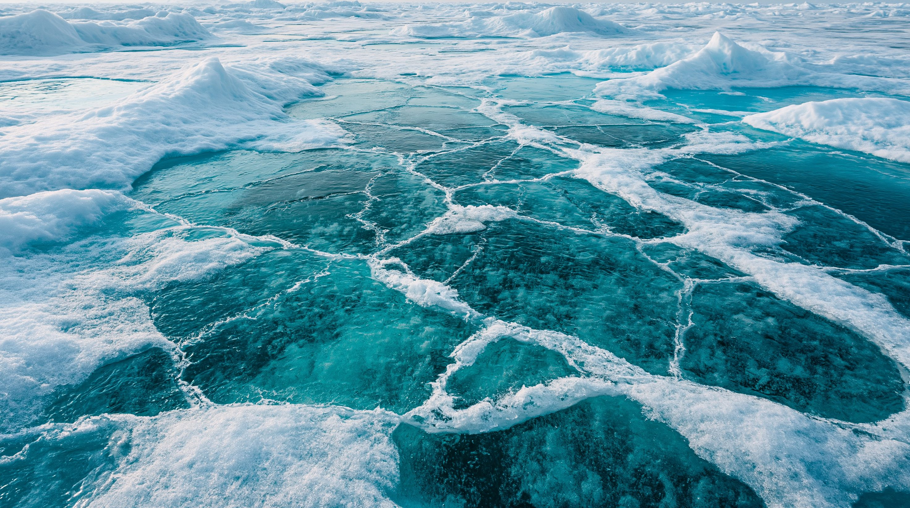
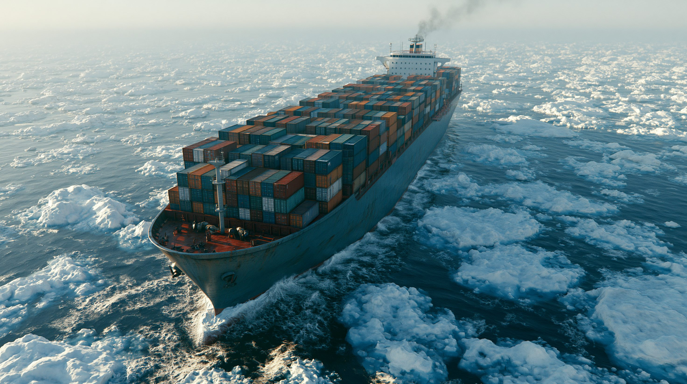
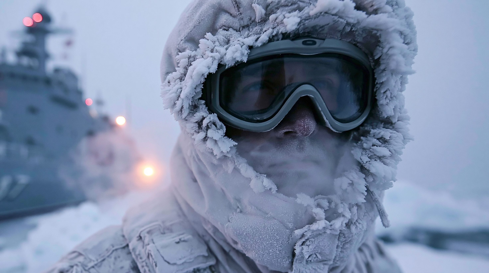
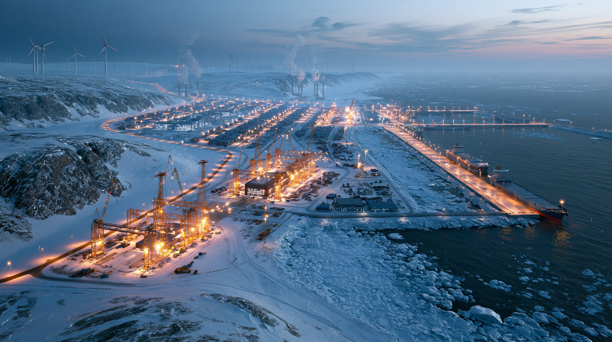

01核心と問い — 氷が溶けて生まれた海
氷が減るということは、これまで通れなかった海が「通れる海」になるということだ。北極の航路・資源・軍事の3つの動きが同時進行し、「開けた海」は誰のものか——この問いが、これからの北極をめぐるすべての対立の根にある。

02タイムライン — 北極が焦点になるまで
ロシア、北極点の海底に国旗を設置
ロシアの探査隊が北極点の海底にチタン製の国旗を設置。「海底山脈（ロモノソフ海嶺）は自国の大陸棚の延長だ」という領有権主張の象徴で、大国の北極競争が可視化された。
中国が「近北極国家」を自称
中国が北極政策白書を発表し、自らを「近北極国家」と位置づけ、北極海航路を「氷上のシルクロード」と命名。沿岸国でない中国の本格参入宣言は、各国に新たな警戒を呼んだ。
西側が「砕氷船同盟」で巻き返し
アメリカ・カナダ・フィンランドが砕氷船の共同建造協定「ICE Pact」を締結。ロシアに大きく後れを取っていた西側の、北極への本格的な巻き返しの始まりとなった。
海氷が史上最低 — グリーンランドは選挙へ
冬季の最大海氷面積が観測史上最低を記録。同月のグリーンランド議会選挙では、住民の約56%が独立を志向するなか、与党が「現実路線で進める」方針で合意した。
中国、欧州へ初のコンテナ輸送 — 20日で到達
中国発のコンテナ船が北極海航路経由でわずか20日（スエズ比ほぼ半分）で英国に到着し、「氷上のシルクロード」の実用化を証明。ロシアと中国は同月、2030年に年2,000万トンを目標とする協力ロードマップを承認した。
グリーンランド問題とNATOの北極展開
トランプ大統領がグリーンランドの「取得」を再び公言し、NATOは北極の軍事プレゼンスを強化する作戦「Arctic Sentry（北極の歩哨）」を発動。フィンランド・スウェーデンの加盟で欧州の北極沿岸はロシアを除き全てNATO圏となり、対立の構図が鮮明になった。

036つの視点
| 立場 | 基本スタンス | 最大の主張 | 課題・懸念 |
|---|---|---|---|
| ロシア | 主導権の維持・資源輸出 | 北極海航路は国家の大動脈 | 制裁下で中国依存が深まる |
| 中国 | 航路参入・多様化 | 氷上シルクロードを延ばす | 非沿岸国ゆえの正統性の弱さ |
| アメリカ | 後発の巻き返し | グリーンランドは安全保障に必須 | 砕氷船不足・同盟国との摩擦 |
| 北欧・カナダ | 主権防衛・ルール重視 | 協力の海であるべき | 大国に挟まれる小国の立場 |
| 先住民 | 生活と自己決定権 | ここは資源庫でなく故郷 | 開発と環境保全のはざま |
| 科学者・環境 | リスクの可視化 | 北極の融解は世界の問題 | 開発速度に備えが追いつかない |

04データ・統計
北極の冬季最大海氷面積の推移（百万km²）
毎年3月ごろに最大となる海氷の面積。長期的に縮小し、2025年・2026年は観測史上最低水準で並んだ。1981〜2010年の平均は約15.6百万km²。 出典：NSIDC（米雪氷データセンター）・NASA
主な国の砕氷船保有数（隻）
氷を割って進む砕氷船は北極航行の生命線。ロシアが圧倒的で、アメリカは大きく後れを取る。カナダは8隻の建造を計画中。 出典：各種報道・専門機関の推計
北極が握る世界の未発見資源
資源は豊富だが大半が海底にあり、採掘は過酷な環境と高コストの壁に阻まれる。出典：USGS環北極資源評価
注目の数字
ガス30%
05深掘り — これから2〜3年で何が起きるか
氷は溶け続け、各国の関与は深まっている。では、この先はどう動くのか。航路・砕氷船・グリーンランド・秩序という4つの軸で、今後2〜3年の見通しを整理する。
氷が溶けて生まれた海は、莫大な富と新しい航路という「機会」と、環境破壊と軍事衝突という「危険」を同時に運んでくる。 北極が「協力の海」になるか「争いの海」になるかを決めるのは、氷の量ではなく、各国が欲望をどう制御し、ルールをどう作り直せるかだ。そしてその議論の中心には、いつも忘れられがちな当事者——そこで生きてきた人々と、地球全体の気候がいることを見落としてはならない。
